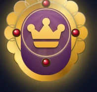
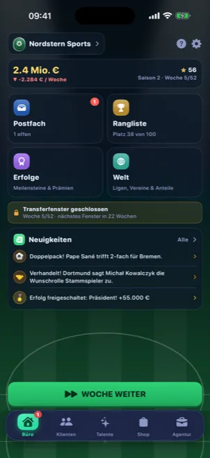
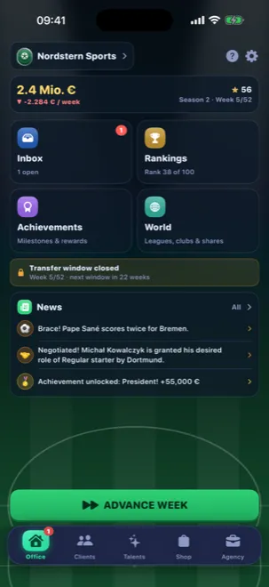
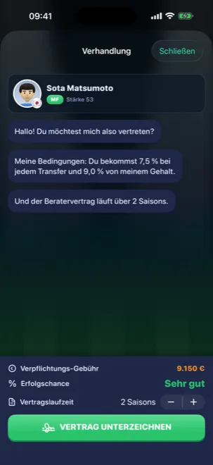
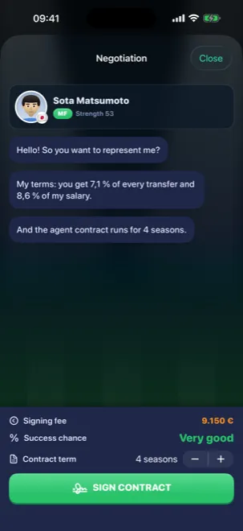
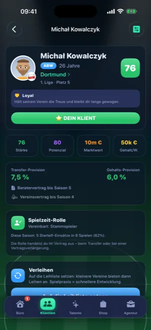
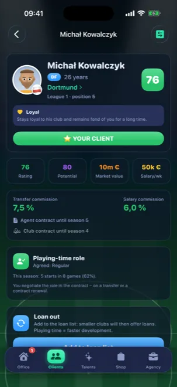
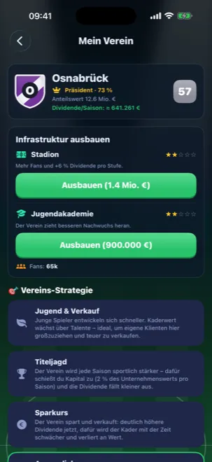
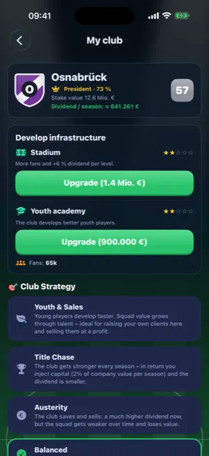
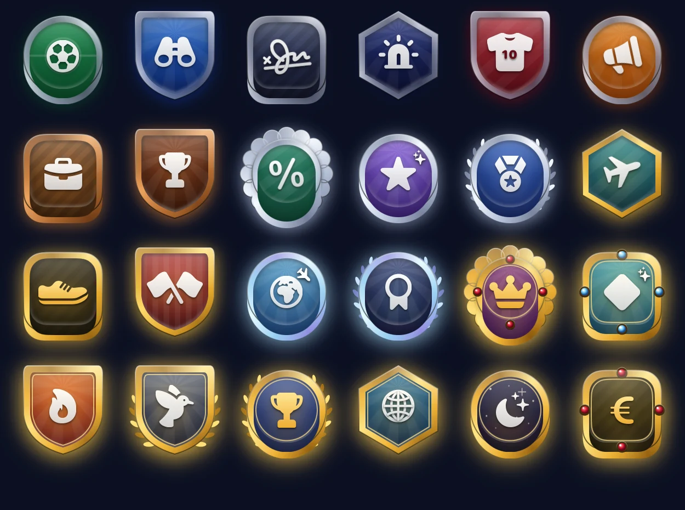

Spielerberater-Simulation · iPhone Football agent simulation · iPhone
Nicht der Trainer.Der Berater. Not the manager.The agent.
Entdecke Talente, bevor es die anderen tun. Führe Verhandlungen, in denen ein Euro zu viel den Deal platzen lässt. Und baue aus einem Ein-Mann-Büro eine weltweite Agentur. Spot talent before your rivals do. Run negotiations where one euro too many kills the deal. And grow a one-desk office into a worldwide agency.
- 0 € Vollversionfull game
- Komplett offlineFully offline
- Keine WerbungNo ads
- Kein Konto nötigNo account needed
- Deutsch & EnglischGerman & English



Die VerhandlungThe negotiation
Jeder Deal hat eine Schmerzgrenze Every deal has a breaking point
Vereine haben ein Budget, Spieler haben Erwartungen — und beide sagen dir nicht, wo genau ihre Grenze liegt. Pokerst du zu hoch, steht der Klub auf und der Transfer ist weg. Clubs have budgets, players have expectations — and neither tells you where the line is. Push too far and the club walks away, taking the transfer with it.
- Echtes Risiko:Real risk: Gier kann den Klienten den Stammplatz kosten. greed can cost your client his starting spot.
- Drei Stellschrauben:Three levers: Gehalt, Spielzeit-Rolle und deine Provision. salary, playing-time role and your commission.
- Ruf zählt:Reputation counts: Wer liefert, bekommt die besseren Anrufe. deliver, and the better calls come to you.


Deine KlientenYour clients
Aus Rohdiamanten werden Weltstars Turn rough diamonds into world stars
Jeder Spieler hat Stärke, Potenzial, Form und einen Charakter, der auf deine Entscheidungen reagiert. Wer auf der Bank versauert, verliert — wer spielt, wächst über seine Prognose hinaus. Every player has strength, potential, form and a character that reacts to your decisions. Leave him on the bench and he fades — give him minutes and he can outgrow his own projection.
- Vollständige Historie:Full history: Transfers, Noten, Titel und Länderspiele. transfers, ratings, titles and caps.
- Beziehung pflegen:Keep the bond: Vernachlässigte Klienten wechseln die Agentur. neglected clients switch agencies.
- Leihen & Wechsel:Loans & moves: manchmal ist der kleinere Klub der klügere Schritt. sometimes the smaller club is the smarter move.


Der AufstiegThe climb
Erst Berater. Dann Präsident. First the agent. Then the president.
Steck deine Provisionen in Vereinsanteile. Ab 50 % gehört der Klub dir: Du setzt die Strategie, baust Stadion und Jugend aus — und kassierst jede Saison Dividende. Put your commissions into club shares. Past 50 % the club is yours: you set the strategy, upgrade stadium and academy — and collect a dividend every season.
- Vier Strategien:Four strategies: von Titeljagd bis Sparkurs — mit echten Folgen. from title chase to austerity — with real consequences.
- Auf- und Abstieg:Promotion & relegation: dein Klub steigt — oder du erklärst es den Fans. your club goes up — or you face the fans.
- Fünf Prestige-Stufen:Five prestige tiers: vom lokalen Büro zur Weltagentur. from local office to worldwide agency.


SammelbarCollectible
24 Wappen für deine Agentur 24 crests for your agency
Sechs sind von Anfang an dabei. Der Rest hängt an deinen Erfolgen — vom ersten Transfer in Bronze bis zum Platin-Orden für den Berater des Jahres. Dein Wappen steht in der Rangliste neben deinem Namen. Six are yours from the start. The rest are tied to your achievements — from your first transfer in bronze to the platinum order for Agent of the Year. Your crest sits next to your name in the rankings.
- StahlSteel
- Bronze
- SilberSilver
- Gold
- PlatinPlatinum
- Pro

Was du nicht bekommstWhat you won't get
Ein Spiel, das dich in Ruhe lässt A game that leaves you alone
FootyAgent ist ein Einzelspieler-Spiel, das komplett dir gehört. Du spielst, wann du willst, so lange du willst — im Flugzeug genauso wie auf dem Sofa. FootyAgent is a single-player game that's entirely yours. Play when you want, as long as you want — on a plane just as well as on the sofa.
Fragen, Feedback oder ein Fehler? Questions, feedback or a bug?
Schreib mir direkt — hinter FootyAgent steckt ein einzelner Entwickler, und jede Nachricht landet bei mir persönlich. Write to me directly — FootyAgent is built by one developer, and every message lands with me personally.